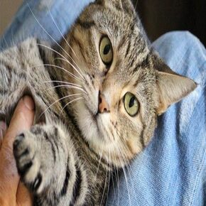
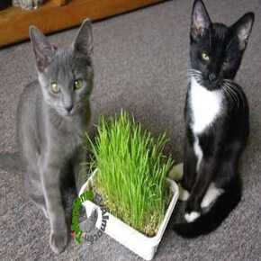
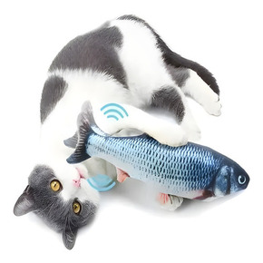

Pruducto |
Descrripcion |
Precio |
|---|---|---|
castracion mediante proceso quirurjico
proceso de castracion para gatos asitido |
Antes95.000CopAhora88.000cop |
|
|  |
Arreglo de uñas para Gatos
Manicura especial para gatos |
Antes38.000CopAhora32.000cop |
|  |
Hierba Gatera
Hierba Gatera especial para gatos |
Antes55.000CopAhora45.000cop |
|  |
Pez Con Luces y Sonido
Pez con luces y sonido especial |
Antes45.000CopAhora35.000cop |